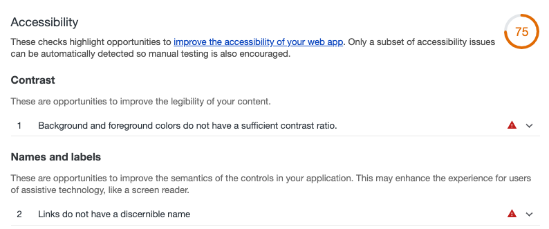
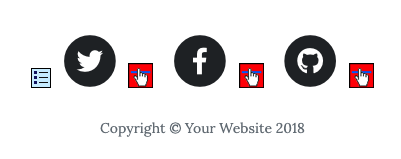
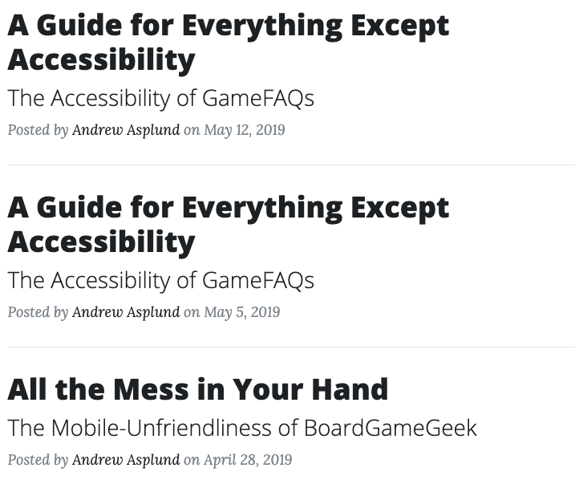
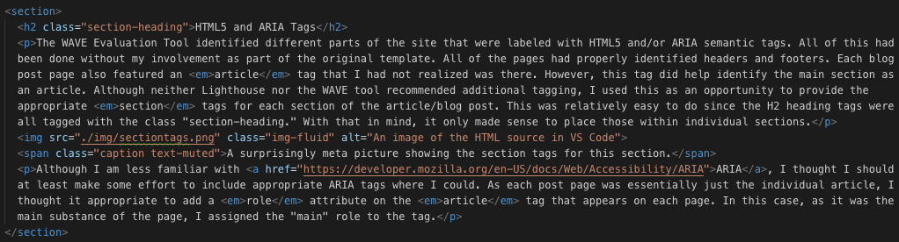
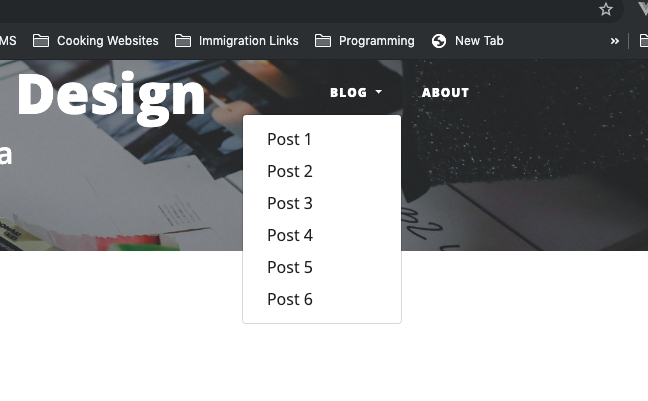
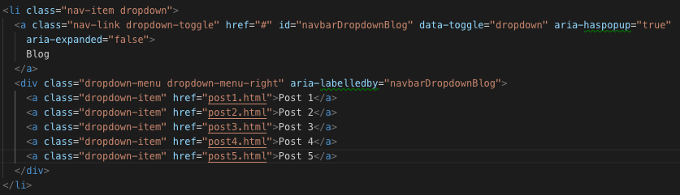
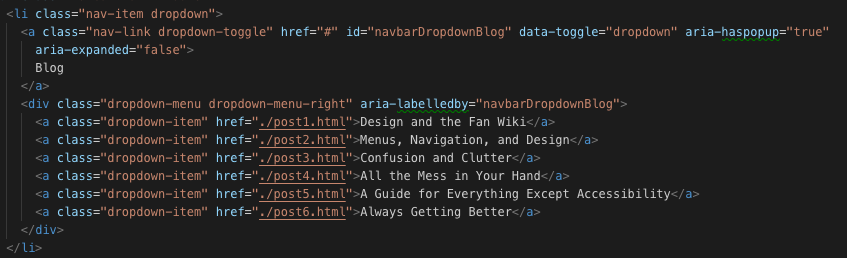

Introduction
For this week, the goal was to analyze the accessibility rating for this website, the User Science Journal hosted at https://profounddark.games/user-science-journal/. Without thinking too much of it, the initial assumption was that it would have a relatively good accessibility rating because it was based on a standard Bootstrap template. That being said, making an effort to improve accessibility is always a goal worthy of pursuit; with that in mind, this site was put through "the ringer" of accessibility analysis.
Lighthouse and WAVE
Because Google Lighthouse is already an integrated part of Chrome's Developer Tools, it was the first analysis performed. Overall, the site performed reasonably well, scoring an accessibility rating of 75.
 The Lighthouse analysis showed a relatively good result for this site.The Lighthouse results indicated two major deficiencies on the site with respect to accessibility: (1) the contrast ratio for one type of text (the class post-meta) was not high enough; and (2) several anchors had no descriptive text.
For the WAVE Evaluation, the WAVE Evaluation Tool Chrome plugin was used. Each page was reviewed with respect to accessibility. With respect to problems and errors, the WAVE Evaluation returned very similar results to the Google Lighthouse analysis. WAVE identified the same contrast issue and the textless anchors.
 The three problematic anchors on each page.Surprisingly, although each issue appeared multiple times throughout the site, it was only the two issues that were identified as accessibility issues.
Contrast and Readability.
The index page of this blog used a light gray color for some of the text. As the text was displayed on a black background, this caused the text to be difficult to read. The original text color can be seen in the picture below:
 The original index.html color scheme for each article summary.The color of that text is defined in the CSS for the whole page. In order to fix it, I simply set the text color to be significantly darker. The original color was #868E96. As there is no particularly good reason to have this text appear in an offset color, the text-color for that class was eliminated so the text would adopt the color of the parent element. This has resolved the issue.
HTML5 and ARIA Tags
The WAVE Evaluation Tool identified different parts of the site that were labeled with HTML5 and/or ARIA semantic tags. All of this had been done without my involvement as part of the original template. All of the pages had properly identified headers and footers. Each blog post page also featured an article tag that I had not realized was there. However, this tag did help identify the main section as an article. Although neither Lighthouse nor the WAVE tool recommended additional tagging, I used this as an opportunity to provide the appropriate section tags for each section of the article/blog post. This was relatively easy to do since the H2 heading tags were all tagged with the class "section-heading." With that in mind, it only made sense to place those within individual sections.
 A surprisingly meta picture showing the section tags for this section.Although I am less familiar with ARIA, I thought I should at least make some effort to include appropriate ARIA tags where I could. As each post page was essentially just the individual article, I thought it appropriate to add a role attribute on the article tag that appears on each page. In this case, as it was the main substance of the page, I assigned the "main" role to the tag.
The Missing Links
The missing links are an exceedingly frustrating result of using Font Awesome's icons. Because Font Awesome displays icons use special classes on i tags, this is a difficult situation to fix. After trying a few different ways to include text without eliminating the aesthetic of the icons, I decided to just not worry about it. Automated accessibility tests like Lighthouse and WAVE were useful, but the results here were not especially helpful. Or, in the alternative, they were helpful insomuch that it was a good thing to be aware of but at this time I'm not prepared to make the changes required to fix it.
Small Changes
Going through and re-writing small things throughout the website prompted one additional change: the navigation menu. In the original permutation of the page, the drop-down menu under "Blog" (above) had a list of the blog posts with the titles Post 1, Post 2, and so forth.
 The stellar naming convention of the pre-Post 6 blog.  The original HTML for the drop-down menu.As that wasn't particularly helpful, I felt it would be more appropriate to include the actual names of each post. So, for each page on the site, I went through and re-wrote the blog menu. This was partially inspired by the observation by Lighthouse and WAVE regarding the anchor tags with no text. Although this wasn't the exact same issue, the intent of the problem was the same: these links had poor text to guide the user. Therefore, the titles for each post were implemented.
 The new, clearer HTML for the drop-down menu.One other small change made to each post was to change the way that the images were being displayed. This post actually presented two challenges: (1) many of the images were snapshots of the page, making it difficult to distinguish between image and post; and (2) not all images centered properly using the img-fluid class. To solve the first problem, the img-thumbnail class was used to put the "thumbnail border" around it. In order to ensure all images, even small ones, were centered, the classes mx-auto and d-block were used to force centering. These were minor changes but they were meant to improve the overall appearance and accessibility of the site.
Conclusions
Overall, a quick review by WAVE and Lighthouse showed that there were some easy changes that could be made to make the site better for accessibility purposes. Those results also prompted me to think about how I might make changes in the future to further improve accessibility. Although the Google Lighthouse Accessibility score only moved up to 86 after making changes, that was still improvement enough to feel good about the process.